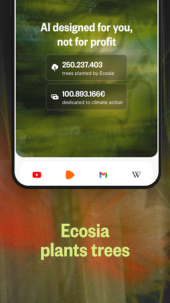

每天搜三小时顺便种五十棵树：把 Ecosia 嵌进我的日常搜索工作流
我把 Ecosia 从"听说过的环保搜索"变成每天离不开的默认入口，分享从旧 Chrome 流程迁移过来的完整工作流，包括默认搜索引擎切换、AI 关闭、缩放调优等实操细节。
我每周要做几十次技术调研——查 API 文档、找错误日志解法、对比同类工具参数。以前的流程是 Chrome 地址栏回车，结果页翻两三屏，遇到 AI 摘要自动展开时还得手动关一次，偶尔想留点干净浏览痕迹就切无痕，但无痕清 cookie 的同时把搜索偏好也抹掉了。整套下来没什么大毛病，就是每次切引擎开关、调缩放、清无痕痕迹这些小动作重复得让人心烦。
现在一条链解决了大部分：从ecosia官网安装的应用设成默认浏览器，关掉 AI 得纯净结果页，调好全局缩放不用双指放大，搜完直接看统计面板知道这周又种了多少树。下面讲讲我是怎么把它嵌进这套工作流的。
旧流程的三处断点
先说迁移前的痛点，讲清楚为什么值得换：
断点一：默认搜索引擎不在本地控制里。Chrome 在不同地区给的可选列表不一样，我这边列表里从来就没有 Ecosia——Google 按地区配置的，跟我想不想用没关系。我试过把它的搜索页设成主页，每次新开标签确实从那搜，但地址栏输入还是走 Chrome 原引擎，两套入口混着用，偶尔忘了从哪进的。
断点二：AI 摘要的自动跳转。刚开始觉得新鲜，用了两周发现每次搜复杂问题，AI 就把对话窗口弹出来拦着我。想关掉它的对话入口，结果发现偏好记在 cookie 里，开无痕就丢，清 cookie 也丢——而我每周至少清一次。
断点三：网页字小，放大太麻烦。手机上读长文（比如 Stack Overflow 的回答）得双指放大，每页都要调，关掉再打开又要重调。Chrome 有全局缩放，但要进系统无障碍设置改，路径深、改了之后整个浏览器界面也跟着变大。
这三点合起来：搜索入口不统一、设置记不住、每页重复操作——单个看不严重，叠加起来就是日常摩擦。
新流程：四步嵌进日常
我的工作流分四个固定环节，每天开机后第一分钟就能完成配置：
第一步：把 Ecosia 应用设成安卓默认浏览器
先跑通这一步，解决搜索入口统一的问题。应用从官方下载拿最稳。之前试过直接在 Chrome 里换引擎，列表里没有就卡壳。换方案：让 Ecosia 应用接管所有链接打开。
具体做法：手机设置里找"默认浏览器"，选 Ecosia。这样不管是从微信、飞书、还是其他 App 里点链接，都会进 Ecosia。原来 Chrome 保留着当"工具浏览器"——只在需要 Google 生态（比如登录 Google Drive）的时候手动切过去开。
第二步：一次性关掉 AI，以后再也不用碰
这是我最庆幸的一个设置。Ecosia 留了一个"无 AI 搜索"总开关，在设置 → AI-free searching 里打开，一次性关掉四样：
- AI 摘要从结果页消失
- 导航栏和搜索建议里的 AI 对话入口移除
- 复杂问题自动跳转对话的机制停掉
- 搜索框回到传统纯搜索样式
关掉之后结果页干干净净，就是传统搜索引擎那种列表，想要哪条直接点。
有个细节要注意：设置记在 cookie 里，而我偶尔开无痕。解法是先在普通模式下把所有偏好调好，再开无痕——无痕会话会继承普通会话的偏好，不用重复设置。
第三步：无障碍设置里调全局缩放
设置 → 无障碍 → 默认缩放滑块，我调到了 135%。这个设置对所有网页生效，不用逐页调。调之前要注意两件事：
- 应用内缩放只管网页内容，系统的字体大小设置也会影响应用界面。我调完应用内缩放，系统字体保持默认，两边叠加不会太夸张。
- 个别网站放大后排版可能错位（比如电商站点的按钮点不到），这种情况直接双指手势临时缩小一下就行，不改变全局设置。
135% 是我试了三天找到的平衡点：长文不累眼，密集信息页也看得清表格。如果只是略费眼，110%–125% 就够；长时间阅读可以拉到 130%–150%；视力较弱的话配合系统字体放大一起用，效果更好。

第四步：顺手看看种树统计，当作每天的收尾反馈
Ecosia 的核心是"每次搜索贡献广告收入，利润 100% 投气候行动"。不是搜一次种一棵那么精确——单次搜索贡献的是广告展示和点击机会，种树数量取决于当月总收入和项目预算。但作为用户，我每天打开应用首页就能看到累计的树木数和投入的资金数，这个数字让坚持用它变得有意义。

实操中最容易断链的两个环节
迁移花了半小时，之后运行了两周，发现两个容易出问题的点：
第一，设置可能随版本变化或地区灰度。Ecosia 按地区灰度开放功能——无 AI 开关在某些地区可能不出现，这不是 bug，而是功能还没对你放开。遇到这种情况，先进设置逐组找 Accessibility 字样，找不到就说明暂未放开，或者翻一下ecosia文档的说明确认当前版本支持的选项。
第二，清 cookie 会抹偏好，无痕会丢失设置。我习惯每周清一次 cookie，以前会把缩放、搜索引擎偏好全抹掉重新设。现在记住了：先在普通模式把所有设置调好，无痕开着也会继承。清 cookie 之前先进 Ecosia 看一眼设置还在不在，在的话就放心清。
这两个点搞定之后，整套流程就稳定了，不用再每次打开都检查一遍。
效果与边界：省了哪些事，什么时候不划算
跑了两周，说点可数的变化：
- 少了每次手动关 AI 对话的操作，每天至少少点 3-5 次
- 不用每页双指放大，长文阅读节省了零碎的等待时间
- 搜索入口统一成了 Ecosia 应用，Chrome 只在需要 Google 生态的时候才用，减少了切换心智
- 最意外的收获：种树数字成了一个每天能看到的反馈，虽然不是核心功能，但每次看到"已种 47 棵"会忍不住继续用
但这套流程也有边界。以下几种情况我还是会切回 Chrome 或其他浏览器：
- 需要登录 Google 账号的场景：Google Drive、Google Docs 这些，Ecosia 也能打开但登录流程偶尔有兼容问题
- 需要精确控制无痕会话的场景：Ecosia 的无痕也会继承普通会话的偏好，如果你想留绝对干净的会话记录就得手动切
- 所在地区没有 Ecosia 的 AI-free 开关：这种情况关掉 AI 这步得等后续放开，其他步骤不受影响
总的来说，把 Ecosia 嵌进工作流的成本不高，收益是稳定的——设置一次，日常摩擦少掉一整块，还顺手为气候行动做点事。对像我这种每天搜两三次资料的人来说，值得。关于 Ecosia 的中文资料我整理了一份，分三份托管在 GitHub、Gitee 和 GitCode，国内访问 Gitee 更顺畅一些。